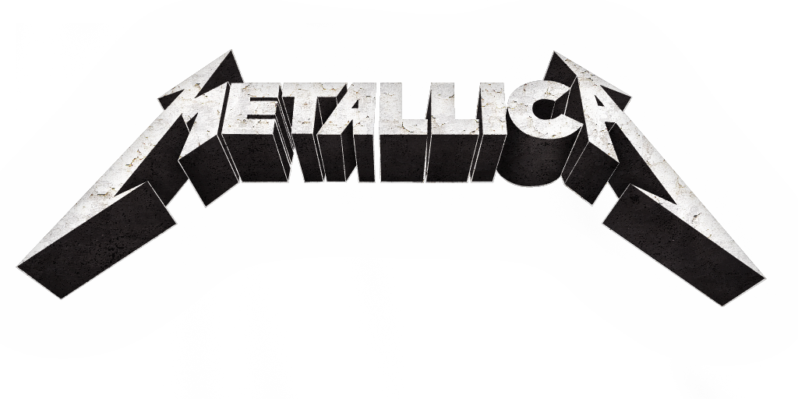
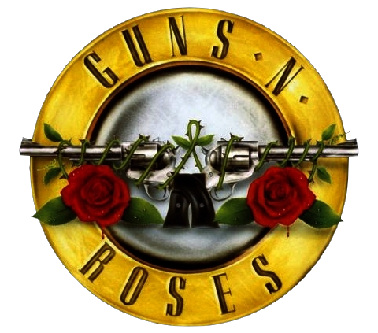

SOMOS QUEEN
Formada en 1970 en Londres, Reino Unido; es una de las bandas de rock más influyentes y exitosas de todos los tiempos. Con un sonido único que fusiona el rock, el pop, el glam y el progresivo, el grupo se destacó tanto por sus potentes interpretaciones en vivo como por su creatividad en el estudio. Integrada originalmente por Freddie Mercury en la voz, Brian May en la guitarra, Roger Taylor en la batería y John Deacon en el bajo, la banda lanzó himnos inolvidables como "Bohemian Rhapsody," "We Will Rock You" y "We Are the Champions," consolidándose como un ícono de la música y la cultura popular. La energía, innovación y habilidad para reinventarse le han asegurado a Queen un lugar perenne en la historia del rock.
INFLUENCIAS EN OTROS ARTISTAS

METALLICA
Más allá de la versión que Metallica grabó de Stone Cold Crazy, clásico de Queen, podemos decir que la banda insignia del trash metal tuvo significativa influencia de ellos. Ambos guitarristas de Metallica, Kirk Hammet y James Hetfield, son reconocidos fans de Queen. Y Hetfield explicó que Brian May fue una enorme inspiración para Metallica, sobre todo en lo que hace a estilo de guitarra.

GUNS N' ROSES
¿De dónde obtuvo Axl Rose la inspiración para una canción tan enorme como November Rain? Pues claro, de Queen. Las influencias de rock orquestal que Guns n’ Roses provenían principalmente de Elton John y la banda de Freddie Mercury. Al inspirarse en estos artistas, la banda pudo incorporar el piano como uno de los principales protagonistas de sus épicas baladas. Axl Rose tiene un gusto en especial por la segunda placa de la banda, Queen II (1974).
MY CHEMICAL ROMANCE
Para el cantante de MyChem, Gerard Way, Queen ha sido una de sus más grandes influencias. Quizás una de las referencias más obvias a la banda de Mercury en el catálgo de la banda de Way, sea el track Welcome to the Black Parade. Con un sonido vinculado al punk y al emo, My Chemical Romance ha desarrollado un sonido con cierta épica y grandilocuencia audible a lo largo de su discografía. Si hay algo que diferencia a esta banda de otras del pop punk circa 2000, es su instrumentación, pretenciosas vocalizaciones y solos de guitarra reminiscentes de Queen.